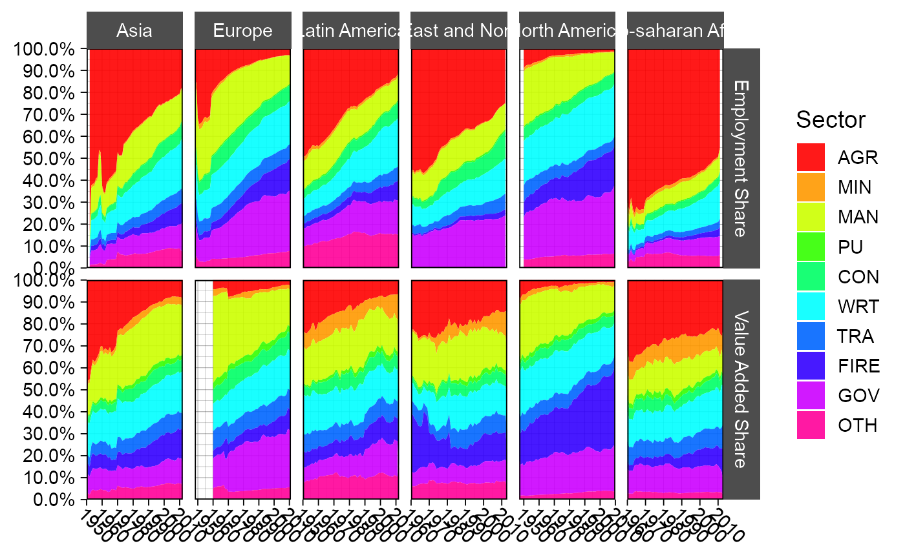
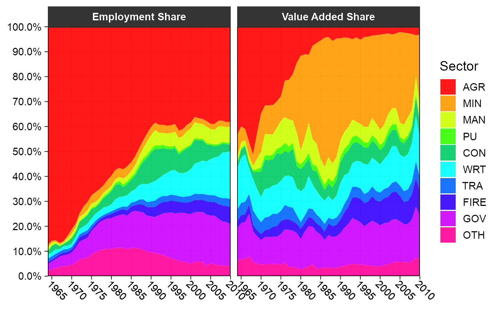

Groningen Growth and Development Centre 10-Sector Database
GGDC10S.RdThe GGDC 10-Sector Database provides a long-run internationally comparable dataset on sectoral productivity performance in Africa, Asia, and Latin America. Variables covered in the data set are annual series of value added (in local currency), and persons employed for 10 broad sectors.
Usage
data("GGDC10S")Format
A data frame with 5027 observations on the following 16 variables.
Countrychar: Country (43 countries)
Regioncodechar: ISO3 Region code
Regionchar: Region (6 World Regions)
Variablechar: Variable (Value Added or Employment)
Yearnum: Year (67 Years, 1947-2013)
AGRnum: Agriculture
MINnum: Mining
MANnum: Manufacturing
PUnum: Utilities
CONnum: Construction
WRTnum: Trade, restaurants and hotels
TRAnum: Transport, storage and communication
FIREnum: Finance, insurance, real estate and business services
GOVnum: Government services
OTHnum: Community, social and personal services
SUMnum: Summation of sector GDP
References
Timmer, M. P., de Vries, G. J., & de Vries, K. (2015). "Patterns of Structural Change in Developing Countries." . In J. Weiss, & M. Tribe (Eds.), Routledge Handbook of Industry and Development. (pp. 65-83). Routledge.
Examples
namlab(GGDC10S, class = TRUE)
#> Variable Class Label
#> 1 Country character Country
#> 2 Regioncode character Region code
#> 3 Region character Region
#> 4 Variable character Variable
#> 5 Year numeric Year
#> 6 AGR numeric Agriculture
#> 7 MIN numeric Mining
#> 8 MAN numeric Manufacturing
#> 9 PU numeric Utilities
#> 10 CON numeric Construction
#> 11 WRT numeric Trade, restaurants and hotels
#> 12 TRA numeric Transport, storage and communication
#> 13 FIRE numeric Finance, insurance, real estate and business services
#> 14 GOV numeric Government services
#> 15 OTH numeric Community, social and personal services
#> 16 SUM numeric Summation of sector GDP
# aperm(qsu(GGDC10S, ~ Variable, ~ Variable + Country, vlabels = TRUE))
# \donttest{
library(data.table)
#> data.table 1.14.8 using 1 threads (see ?getDTthreads). Latest news: r-datatable.com
#> **********
#> This installation of data.table has not detected OpenMP support. It should still work but in single-threaded mode.
#> This is a Mac. Please read https://mac.r-project.org/openmp/. Please engage with Apple and ask them for support. Check r-datatable.com for updates, and our Mac instructions here: https://github.com/Rdatatable/data.table/wiki/Installation. After several years of many reports of installation problems on Mac, it's time to gingerly point out that there have been no similar problems on Windows or Linux.
#> **********
#>
#> Attaching package: ‘data.table’
#> The following objects are masked from ‘package:dplyr’:
#>
#> between, first, last
library(magrittr)
library(ggplot2)
## World Regions Structural Change Plot
GGDC10S %>%
fmutate(across(AGR:OTH, `*`, 1 / SUM),
Variable = fifelse(Variable == "VA","Value Added Share", "Employment Share")) %>%
replace_outliers(0, NA, "min") %>%
collap( ~ Variable + Region + Year, cols = 6:15) %>% qDT() %>%
melt(1:3, variable.name = "Sector", na.rm = TRUE) %>%
ggplot(aes(x = Year, y = value, fill = Sector)) +
geom_area(position = "fill", alpha = 0.9) + labs(x = NULL, y = NULL) +
theme_linedraw(base_size = 14) + facet_grid(Variable ~ Region, scales = "free_x") +
scale_fill_manual(values = sub("#00FF66", "#00CC66", rainbow(10))) +
scale_x_continuous(breaks = scales::pretty_breaks(n = 7), expand = c(0, 0))+
scale_y_continuous(breaks = scales::pretty_breaks(n = 10), expand = c(0, 0),
labels = scales::percent) +
theme(axis.text.x = element_text(angle = 315, hjust = 0, margin = ggplot2::margin(t = 0)),
strip.background = element_rect(colour = "grey30", fill = "grey30"))

# A function to plot the structural change of an arbitrary country
plotGGDC <- function(ctry) {
GGDC10S %>%
fsubset(Country == ctry, Variable, Year, AGR:SUM) %>%
fmutate(across(AGR:OTH, `*`, 1 / SUM), SUM = NULL,
Variable = fifelse(Variable == "VA","Value Added Share", "Employment Share")) %>%
replace_outliers(0, NA, "min") %>% qDT() %>%
melt(1:2, variable.name = "Sector", na.rm = TRUE) %>%
ggplot(aes(x = Year, y = value, fill = Sector)) +
geom_area(position = "fill", alpha = 0.9) + labs(x = NULL, y = NULL) +
theme_linedraw(base_size = 14) + facet_wrap( ~ Variable) +
scale_fill_manual(values = sub("#00FF66", "#00CC66", rainbow(10))) +
scale_x_continuous(breaks = scales::pretty_breaks(n = 7), expand = c(0, 0)) +
scale_y_continuous(breaks = scales::pretty_breaks(n = 10), expand = c(0, 0),
labels = scales::percent) +
theme(axis.text.x = element_text(angle = 315, hjust = 0, margin = ggplot2::margin(t = 0)),
strip.background = element_rect(colour = "grey20", fill = "grey20"),
strip.text = element_text(face = "bold"))
}
plotGGDC("BWA")

# }